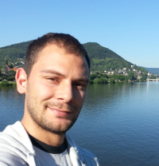

|  |
Biagio BrattoliPhD student in Computer Vision and Deep Learningbiagio.brattoli (at) gmail (dot) com |
| 2020 | |
|
Rethinking Zero-shot Video Classification: End-to-end Training for Realistic Applications
Biagio Brattoli, Joseph Tighe, Fedor Zhdanov, Pietro Perona, Krzysztof Chalupka Computer Vision and Pattern Recognition (CVPR), 2020. [Paper] [Website] [Code] |
|
| 2019 | |
|
MIC: Mining Interclass Characteristics for Improved Metric Learning
Biagio Brattoli*, Karsten Roth*, Björn Ommer International Conference in Computer Vision (ICCV), 2019. [Paper] [Website] [Code] |
|
| 2018 | |
|
Improving Spatiotemporal Self-Supervision by Deep Reinforcement Learning
Biagio Brattoli*, Uta Büchler*, Björn Ommer European Conference in Computer Vision (ECCV), 2018. [Paper][Website] |
|
|
Cross and Learn: Cross-Modal Self-Supervision
Nawid Sayed, Biagio Brattoli, Björn Ommer German Conference on Pattern Recognition (GCPR), 2018 (oral). [Paper][Website][Oral] |
|
|
X-GAN: Improving Generative Adversarial Networks with ConveX Combinations
Oliver Blum, Biagio Brattoli, Björn Ommer German Conference on Pattern Recognition (GCPR), 2018 (oral). [Paper][Website][Oral] |
|
|
Early reduced behavioral activity induced by large strokes affects the efficiency of enriched environment in rats
Wahl, AS, Erlebach, E, Brattoli, B, Büchler, U, Kaiser, J, Ineichen, VB, Mosberger, AC, Schneeberger, S, Imobersteg, S, Wieckhorst, M, Stirn, M, Schroeter, A, Ommer, B, Schwab, ME Journal of Cerebral Blood Flow & Metabolism, 2018. [Paper][Website][Code] |
|
| 2017 | |
|
LSTM Self-Supervision for Detailed Behavior Analysis
Biagio Brattoli*, Uta Büchler*, .., Björn Ommer Computer Vision and Pattern Recognition (CVPR), 2017. [Paper][Website][Code] |
|
|
Optogenetically stimulating intact rat corticospinal tract post-stroke restores motor control through regionalized functional circuit formation
A. S. Wahl*, U. Büchler*, A. Brändli, B. Brattoli, S. Musall, H. Kasper, B. V. Ineichen, F. Helmchen, B. Ommer & M. E. Schwab Nature Communications, 2017. [Paper][Website] |